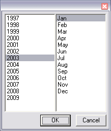

Uses ChooseField to display a field with a choose button on the right side. The button will bring up a YearMonthControl in a dialog. Choosing OK from the dialog will fill in the selection from the YearMonthControl into the Field. Cancelling from the dialog will not modify the fields contents.
For example:
Window(#(ChooseYearMonth))
Would display:

and clicking on the "..." button would display:
See also: YearMonthControl